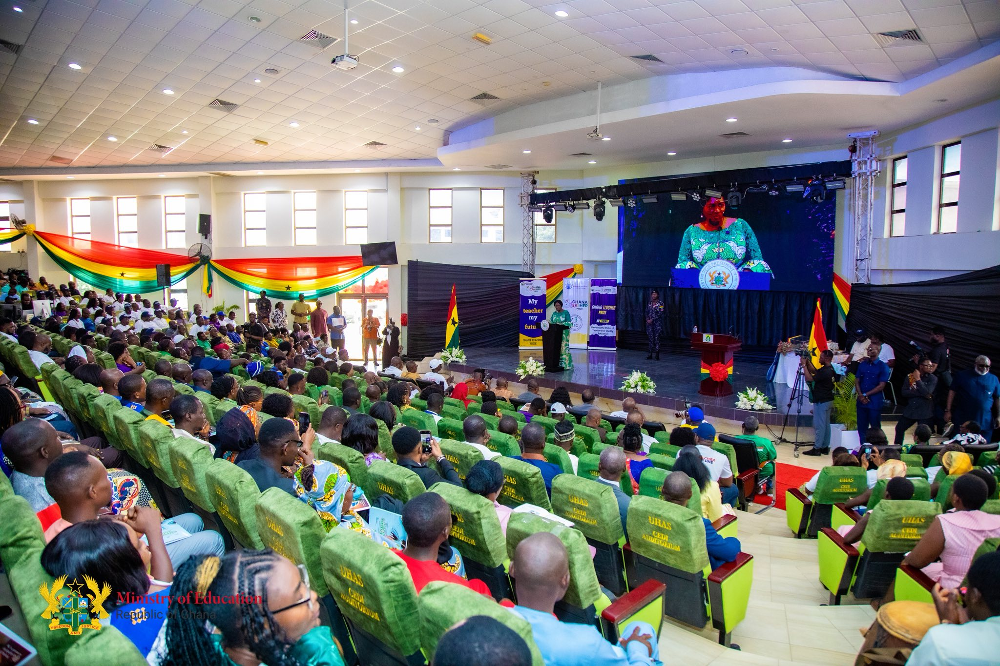
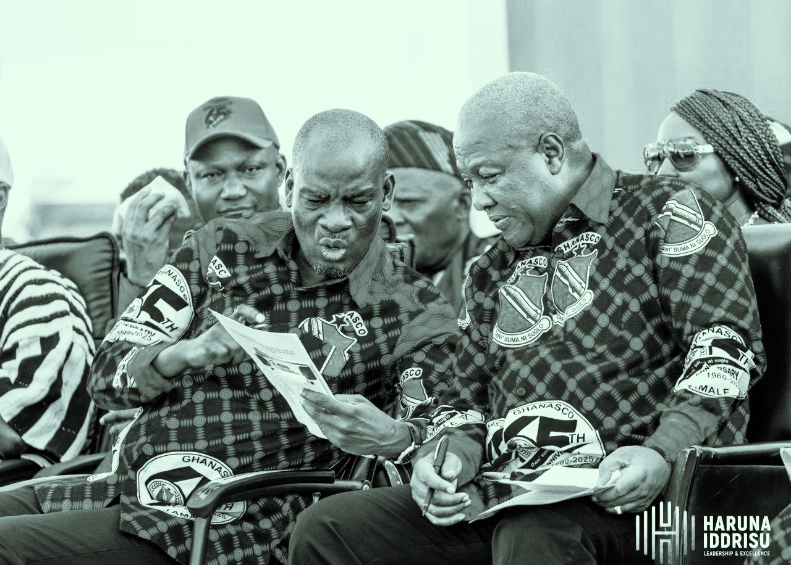
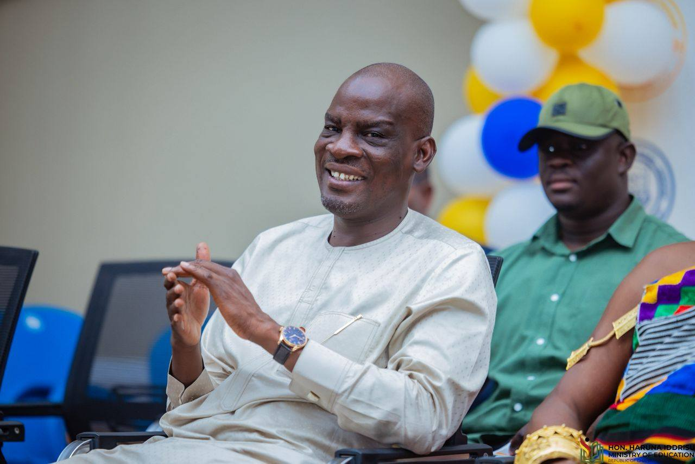

For many young people in Ghana, the dream of higher education is often challenged by one simple reality cost. For years, that gap has been quietly bridged for many by Haruna Iddrisu. His commitment to education is not just policy-driven—it is personal.
"I had gained admission to study Nursing, but my family couldn't afford the fees. I was on the verge of deferring when I received support through Hon. Haruna Iddrisu. Today, I'm in my final year, and I know my story would have been different without that help."
"Coming from a small community, studying Engineering felt like a distant dream. The scholarship didn't just pay my fees—it gave me confidence that someone believed in my future."
"This support changed everything for me. I've made it a personal goal that when I complete my studies, I will also help at least one student the same way I was helped."
Ongoing Support
Through personal initiatives, constituency programs, and strategic partnerships, Hon. Haruna Iddrisu has consistently invested in people—especially those from underserved communities in the Northern Region.
His approach is simple but powerful: remove barriers, unlock potential, and let determination do the rest.
Future Vision
The vision remains clear—to ensure that no capable student is denied education because of financial limitations. Each scholarship tells a story. Each story represents a future rewritten.
And for many, that story begins with a single opportunity.
